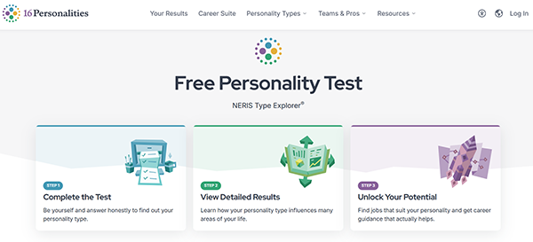

Learning Journal 1
I do not enjoy filling out forms, even the ones that are supposed to be fun, like the MBTI Personality quiz and the ‘what Greek god are you a child of?’ quiz. I find most forms tedious. To me, they are a necessary evil of internet life. However, knowing the lengths product and UX designers go to improve user experience is comforting. Unsurprisingly, I have not designed many forms, but even in the ones I have designed, I missed key details highlighted by this article. In my case, I used universally sized input boxes, frequent drop-down menus, and no written instructions for tasks such as creating passwords. My design focused on aesthetics rather than usability and inclusivity. In the future, I will refer back to this article while designing forms. Although aesthetics are important, a smooth, non-irritating completion process is much more important to my user and me.
I enjoy the form design of 16Personalities’ MBTI personality quiz. 16Personalities uses a highly legible and easy-to-understand design which avoids visual overload. The buttons for answer options shrink and turn gray while approaching neutral, and grow larger and more colorful as they approach strongly agree and strongly disagree. This decision exemplifies the impact of the user’s choice and encourages them to think critically as to whether they agree or disagree with the question. Other aspects of the design, such as the completion bar encourages users to continue filling out the form because they are aware of their progress towards the end point. Other small details, such as automatic scrolling forward after completing a question, reduce clicks and promote easy completion.